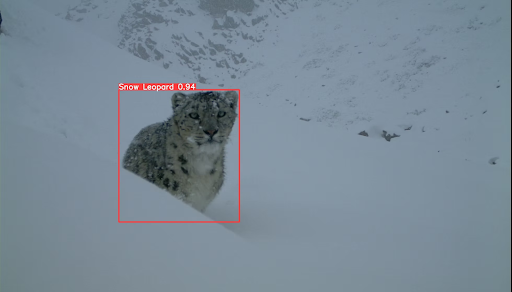

Nepal, Himalayas
Project Trinity

This initiative is dedicated to safeguarding Snow Leopards across the Himalayas. Snow Leopards live in areas that are difficult to survey, and through the use of technology, KwF has helped integrate a mobile app, desktop platform, and drones/sensors to monitor habitats, track movements, and respond to threats.